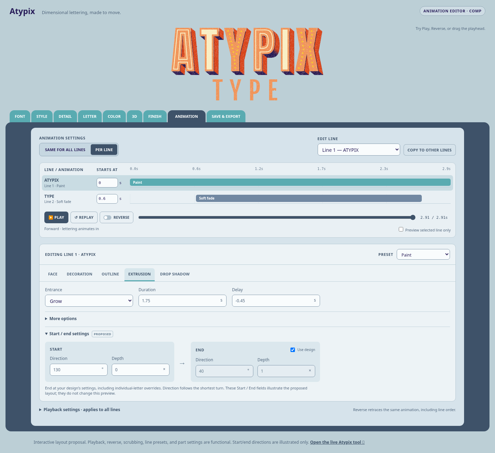
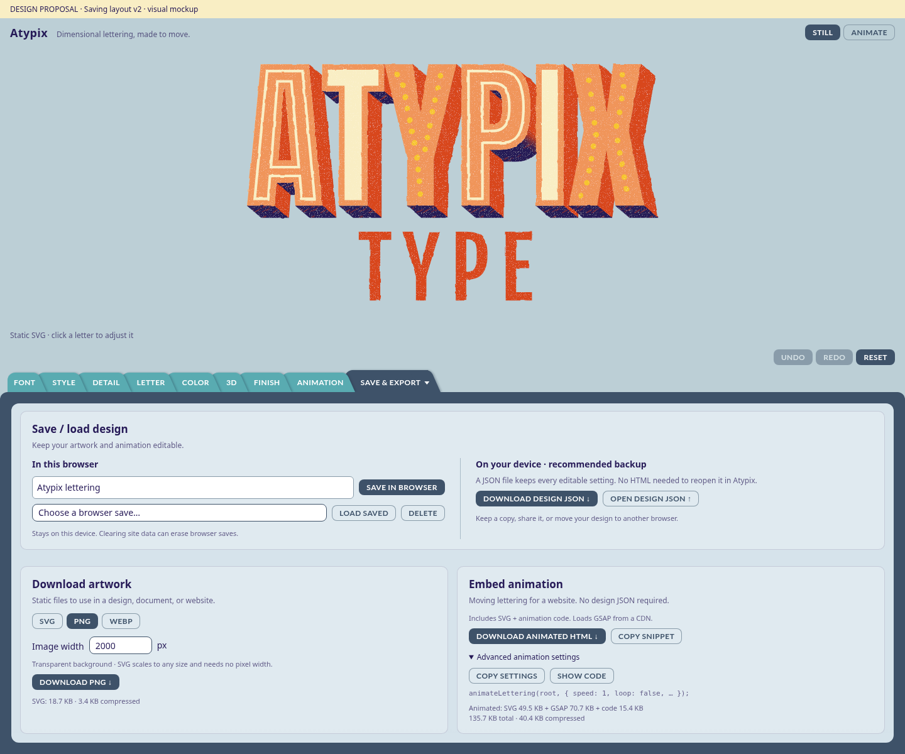
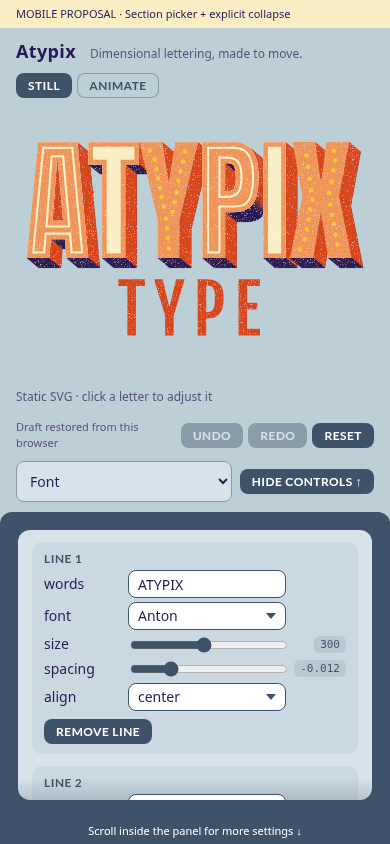
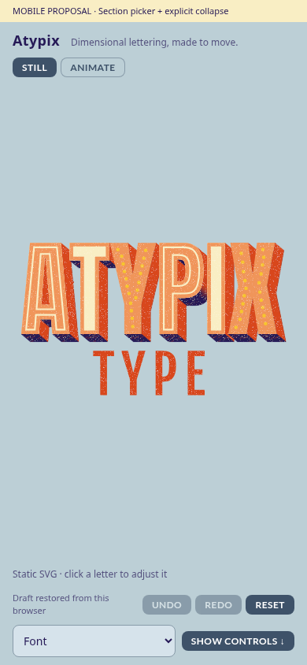

Atypix · Design proposals
Try the animation editor proposal below. Earlier saving and mobile mockups are kept for reference.
Animation editor
Shared or per-line settings, one part editor, and a player with Reverse and scrubbing. Try the interactive comp.

Saving layout
Save/load design comes first, followed by artwork downloads and animation embedding.

Mobile controls
A section picker makes every settings panel discoverable. Hide/Show controls gives more room to see the artwork.



